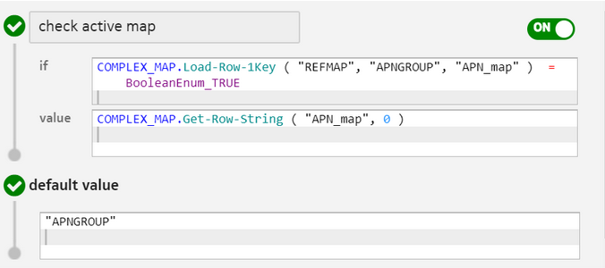
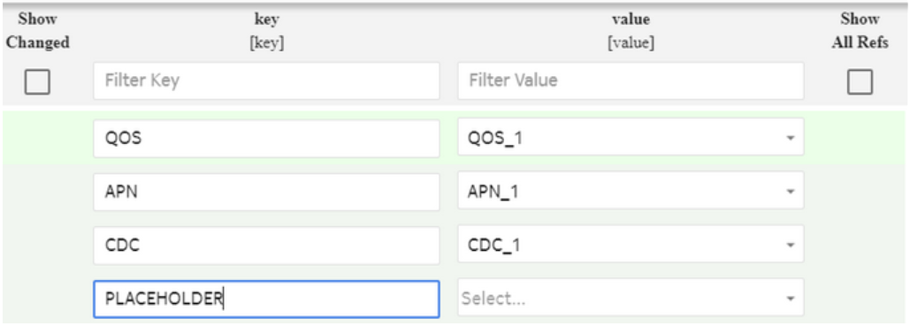
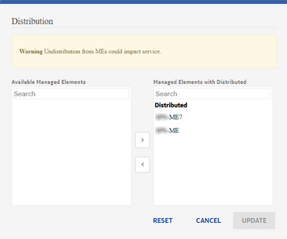

Configuration
The mapping makes use of generic bindings and caches entries into an in-memory map but are configured in the SM GUI.
Log into SM GUI, navigate to Common Configuration and select Mapping Tables. To define a new mapping table, click to add the basic details and profile configuration as described in the given table:
|
Parameter |
Description |
Options |
Mandatory/Optional |
|---|---|---|---|
| Map Name | This parameter indicates a unique name of the map. | String | Mandatory |
| Reference Based Map |
This parameter can be either set to True or False by selecting the check box on the SM GUI. If this parameter is set as True, then the complex map is a reference-based map, which means that the map values inside this map are names of an existing complex map. This parameter must be true for version based map.  Note: Note:
|
Boolean | Optional |
Additional information: In case of reference-based map, the [value] is a drop-down list in the SM GUI that presents the record values of existing complex maps. This list can be filtered as per the key name specified in the [key]. For example, if the [key] is set as CDC, then the [value] displays all the complex maps having CDC as a sub-string in its name. Here the key name is not case-sensitive and the map key displays maps with names CDC_1 or CDC_2. Note: |
|||
| Version |
This parameter allows a user to create multiple complex maps with the same name and different versions. The maximum number of characters allowed in this attribute is 50. The ID field for versioned map includes a version-suffix consisting of a field separator character || and version as an user input. For example, map having id test||v1, which indicates the map name is test and version is v1. This parameter is allowed only when the Reference Based Map flag is set as True. Note:The Version attribute is only maintained in the SM server in the complex map table. While configuring the rules in the RSV, a user does not mention the complex map version. Complex map versioning allows a user to update a complex map data without updating the rule system. |
String and read-only | Optional |
|
Example: Consider there is an existing distributed complex map REFMAP on a selected ME. A user needs to update few fields of this map. The rules in the RSV are referring to the REFMAP key. The user clones the REFMAP with version v2019 and updates the desired fields in the newly created complex map. The user then distributes this map (which means the REFMAP with version v2019) to the selected ME. The SM server automatically computes the delta between the two version of REFMAP on the selected ME and distributes the contents, which were changed on the selected ME. The distributed map in the ME has the same name REFMAP.  |
|||
| Pattern Type | This parameter allows a user to select REGEX_PATTERN or IP_SUBNET_PATTERN while defining a mapping table. | Enum | Optional |
|
A user can select either of the following values from the Pattern Type drop-down list:
NOTE:
|
|||
| Map Keys |
This parameter indicates the name of the first Key column. This is the header row, which indicates meaning to each field. The first column in the example table ComplexMappingTable example defines the key for the row. You can have up to 10 keys. |
String | Mandatory |
| ADD KEY | |||
| Map Values |
This parameter indicates the name of the first Value column. This is the header row which indicates your meaning to each Value field in the row. In the example table ComplexMappingTable example, each row must consist of exactly m values, where m can be between 1 and M, each value can contain up to 1024 characters, with a maximum of 1 MB for an entire row of values. |
String | Mandatory |
| ADD VALUE > Import Mapping Table from File | |||
| Import File | Click the BROWSE button to select the .CSV file that you want to import. | Optional | |
| Overwrite | This parameter defines whether mapping table structure is derived from a .CSV file. | Select this check box to derive the mapping table structure from a .CSV file. | Optional |
Note:-
A user can specify the version while creating or cloning a given map. Once a map is created, the version cannot be added or modified in the existing map. However, if there are two versions of a complex map and one of the maps having the Version field empty while the other map having the Version field non-empty; both are treated two maps with different versions. For example, a user creates a map with name test and empty version and one more map with same name test and version v1. In this case, the SM server creates two maps; one with id test and other with id test||v1. Both maps with the same map name are treated as two versions of a map with the name test.
-
Already existing map can be updated to reference based map only when all the entries in that map exist as complex map in complex map table. Complex maps having non-empty version (say v2) cannot be changed to non-reference map.
-
If user clones a new version of an existing non-reference map by setting the Reference Based Map flag as True, then the SM server first checks that all the entries from which map is being cloned exist as a complex map. If all the values exist as a complex map in SM server, then the SM server clones the new map as a reference-based map.
-
To support the version of any existing map, which was created as non-reference map before application upgrade (for example refMap), user can clone or create next version of the existing map as reference-based map with same name and non-empty version attribute. SM server validates the already existing map has entries exist as complex map in complex map table. If validation is successful, then the SM server creates a new version of existing map and auto-updates the already existing non-reference map to reference based map (refMap without version). For example, consider there is an already existing map say refMap. If user tries to create next version (
map Name= refMap and version = v1) of this map by selecting Reference Based Map flag as True, then the SM server validates the entries in old version (refMap) of same map. If all the entries (map values) are name of another existing complex map record, then the SM server allows the user to create next version of same map and automatically updates the old map (refMap) as reference-based map. -
It is recommended to define all versions of a given map with same nomenclature.
-
The Reference Based Map flag cannot be updated when a given map has more versions or the Version field of that map is non-empty. Nested referencing is not allowed because using a reference based map inside other reference based may lead to unexpected behavior.
- All the values in the reference based maps should not be null. However, if a user needs to create a complex map entry with a null value, then one of the keys must be defined with name as PLACEHOLDER (which is case-insensitive) as shown in the following screenshot: 
Additional information
-
A map in the provisioned state cannot be updated or deleted.
-
Whenever a user provisions a complex map on an ME, the SM server sets its state on the SM GUI to IN_PROGRESS, which means the provisioning of all entries in that map is ongoing. In that state, all operations like delete, update, retry, or provision are not allowed. However, if for some reason, a record gets locked in the IN_PROGRESS, then the user can use the reset option (or REST API) present in distribution box of the SM GUI but the reset option should be only used when provisioning of that record is not ongoing. Otherwise, it can lead to data inconsistency.
If any ME goes offline permanently, then undistribution on that ME does not work and the record gets locked in the DELETE_ATTEMPTED state. To remove such ME from distribution list of already provisioned record, the reset button is used, which removes the MEs whose state is DELETE_ATTEMPTED from the distribution list. However, this option does not make any correction in data inconsistency between an ME and SM server. The reset option should be used only when ME is not reachable and when provisioning operation for the same record is not ongoing.
